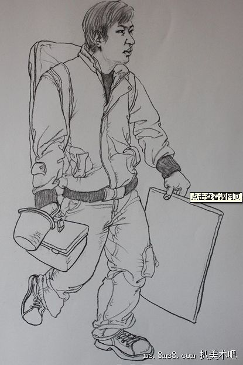

进行任何一种创作之前，都要懂得删繁就简、把握重点。在进行人物动态速写时，也要把握好这点，其重点部位有轮廓线、动态线、头部、关节、衣服等。只有好了这几个重点部位，才能使你的人物形象生动、协调。
轮廓线是人物动态速写的第一步，我们要通过观察确定对象是站姿还是坐姿，是低头还是仰头，是行走还是奔跑等， 然后确定好不同姿态的轮廓和比例，要注意关节的转折点和跨度大的地方，比如肩、肘、腰、膝、手腕、脚腕等。 动态线是对人体的动态趋势进行概括的线，决定着人物的动作趋势是否生动。此时，除了要考虑总体的比例外， 还要注意动态线和水平线构成的角度，一旦角度出现错误，就会造成动态无力、重心不稳、动静不分等问题， 使人物形象整体失去协调。 头部是刻画人物动态的一部分，身体的其它部位的比例是根据头部长度来测算的，因此，一定要测量准确，避免出现其他部位比例失调现象。
关节连接着人体各部位，各部位之间的连线决定着动态关系，因此，一定要观察好关节连接的部位的走向以及动态， 使部位与部位之间协调、平衡。 人物的衣服会通过褶皱来表现出人体的结构，因为如果人体的动作发生变化， 衣服的褶皱会随之变化。在表现时，人物穿着衣服的线条往往很复杂多变，要着重表现能够代表动态特征的线条， 去掉一些杂乱无章的线条，尽量做到详略得当，切忌平均用力。 总之，人物动态的表现涉及部位较多， 而且情况多变，要选取多种动态去联系，在这个过程中学会随机应变。